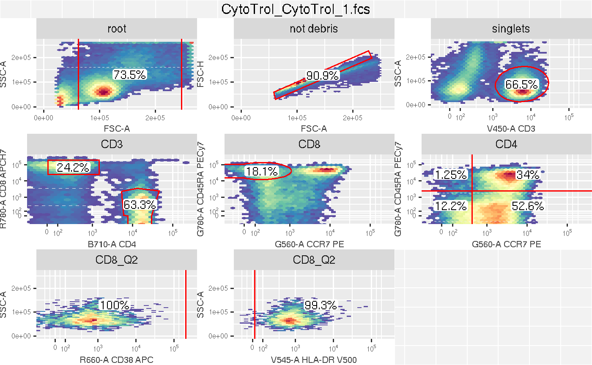

vignettes/cytobank2GatingSet.Rmd
cytobank2GatingSet.RmdThis vignette demonstrates how the gatingML files exported from Cytobank can be imported into R as a GatingSet object.
library(flowWorkspace)
library(CytoML)
acs <- system.file("extdata/cytobank_experiment.acs", package = "CytoML")Create cytobank_experiment object from the ACS bundle exported from Cytobank
## cytobank Experiment: tcell
## gatingML File: /tmp/Rtmpnnoo6B/file28934f30c243/experiments/3637/cytobank_gate_ml2_v41.xml
## panel samples
## 1 Panel 1 1cytobank_experiment is a wrapper around the ACS file, which can be inspected by various accessors.
## [1] "CytoTrol_CytoTrol_1.fcs"## [1] "FSC-A" "FSC-H" "FSC-W" "SSC-A" "B710-A" "R660-A" "R780-A" "V450-A"
## [9] "V545-A" "G560-A" "G780-A" "Time"## $CytoTrol_CytoTrol_1.fcs
## [1] "FSC-A" "FSC-H" "FSC-W" "SSC-A" "CD4"
## [6] "CD38 APC" "CD8 APCH7" "CD3" "HLA-DR V500" "CCR7 PE"
## [11] "CD45RA PECy7" "Time"## name Conditions Individuals
## CytoTrol_CytoTrol_1.fcs CytoTrol_CytoTrol_1.fcs condition1 ptid1Then import cytobank_experiment into GatingSet
Alternatively, the import can be done by gatingML and fcs files that are downloaded separately form Cytobank without ACS.
xmlfile <- ce$gatingML
fcsFiles <- list.files(ce$fcsdir, full.names = TRUE)
gs <- cytobank_to_gatingset(xmlfile, fcsFiles)However, it doesn’t have the information from yaml file (part of ACS). E.g. sample tags (i.e. pData) and customized markernames. So it is recommended to import ACS.
Inspect the results

## name Population
## 1: CytoTrol_CytoTrol_1.fcs /not debris
## 2: CytoTrol_CytoTrol_1.fcs /not debris/singlets
## 3: CytoTrol_CytoTrol_1.fcs /not debris/singlets/CD3
## 4: CytoTrol_CytoTrol_1.fcs /not debris/singlets/CD3/CD8
## 5: CytoTrol_CytoTrol_1.fcs /not debris/singlets/CD3/CD8/CD8_Q2
## 6: CytoTrol_CytoTrol_1.fcs /not debris/singlets/CD3/CD4
## 7: CytoTrol_CytoTrol_1.fcs /not debris/singlets/CD3/CD4/Q1
## 8: CytoTrol_CytoTrol_1.fcs /not debris/singlets/CD3/CD4/Q2
## 9: CytoTrol_CytoTrol_1.fcs /not debris/singlets/CD3/CD4/Q4
## 10: CytoTrol_CytoTrol_1.fcs /not debris/singlets/CD3/CD4/Q3
## 11: CytoTrol_CytoTrol_1.fcs /not debris/singlets/CD3/CD8/CD8_Q2/CD38 range
## 12: CytoTrol_CytoTrol_1.fcs /not debris/singlets/CD3/CD8/CD8_Q2/HLA range
## Parent Count ParentCount
## 1: root 87876 119531
## 2: /not debris 79845 87876
## 3: /not debris/singlets 53135 79845
## 4: /not debris/singlets/CD3 12862 53135
## 5: /not debris/singlets/CD3/CD8 2331 12862
## 6: /not debris/singlets/CD3 33653 53135
## 7: /not debris/singlets/CD3/CD4 419 33653
## 8: /not debris/singlets/CD3/CD4 11429 33653
## 9: /not debris/singlets/CD3/CD4 4119 33653
## 10: /not debris/singlets/CD3/CD4 17686 33653
## 11: /not debris/singlets/CD3/CD8/CD8_Q2 2331 2331
## 12: /not debris/singlets/CD3/CD8/CD8_Q2 2315 2331